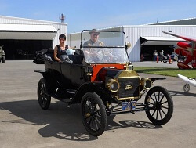
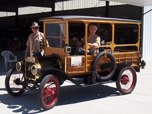
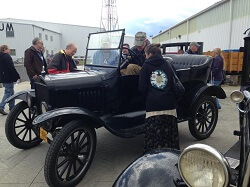
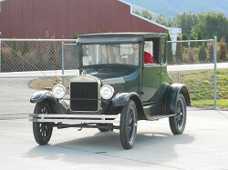
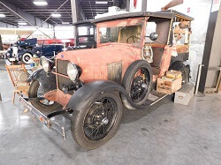
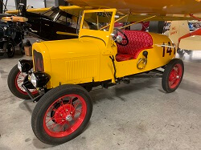
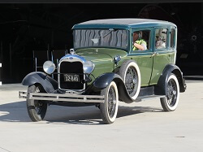
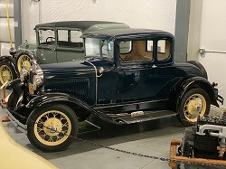
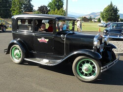
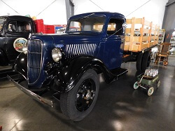

Ford Collection
Ford Automobile Collection
1913 Ford Model T Touring Car
Year: 1913
Donor: Mike Gaulke
Engine: 4 Cyl.
Transmission: "T"
Number of Doors: 3
Curb Weight in Lbs: approx. 1,500
This car was the main mode of transportation for the early Hood River dentist Dr. S.C. Gaulke. It changed hands amongst the Gaulke family before it came to WAAAM but none of the family was quite sure on the year of the car. WAAAM's resident experts took a look and found yet another classic example of a common early automotive practice - to use up the old stock of parts before transitioning to the all new year of parts.
1914 Ford Model T Depot Hack
Year: 1914
Donor: Museum Funds with thanks to Michael & Sandra Fritz
Engine: 4 Cyl., approx 20 HP
Transmission: "T" + Rucksell
Number of Doors: 3
Approximate Curb Weight in Lbs: 1,200
The Ford Model T Depot Hack was created to carry passengers and their luggage to and from the railway depots. By 1914, the assembly process for the Model T had been so streamlined it took only 93 minutes to assemble a car. That year Ford produced more cars than all other automakers combined.
1915 Ford Model T Runabout
Year: 1915
Donor: Bruce & Barbara Weir
Engine: 4 Cyl., approx. 20 HP
Transmission: "T"
Number of Doors: 1
Curb Weight in Lbs: 1,200
1915 marked two big turning points for the Ford Model T – it was the end of the brass era for the cars, production shifted to all black cars, and the one millionth Ford Model T was produced. During the original restoration of this runabout, many layers of built up dirt and grime were stripped from the body revealing the original black paint and two different advertisements for early Pillsbury products. At the time automobiles were still novel enough that advertisements like this would easily stand out for anyone who saw the car which made the artwork a good investment for many companies looking to capitalize on new ideas of brand recognition, customer loyalty, and outdoor advertising.
1918 Ford Model T Touring Car
 Year: 1918
Year: 1918
Donor: Mary Sue Benton in Memory of Steve Benton
Engine: 4 Cyl.
Transmission: "T"
Number of Doors: 3
Curb Weight in Lbs: 1,500
Sometimes when someone collects cars they stick to a certain make or model. Other times folks have trouble deciding which "icon" is their favorite and wind up with an assortment of cars. Steve Benton liked muscle cars, but military jeeps were too classic to pass up and when he first got behind the wheel of a Model T he had to have some of them too. This car is one of the many Model Ts from his collection.
1919 Ford Model T Army Ambulance
 Year: 1919
Year: 1919
Donor: WAAAM Volunteers and Members
Engine: 4 Cyl.
Transmission: "T"
Number of Doors: Open-doored
Curb Weight in Lbs: approx. 1,650
For the longest time museum founder, Terry Brandt, wanted a World War I vehicle to go with WAAAM’s crown jewel, a 1917 Curtiss Jenny. For years he, along with other volunteers, collected the parts that would become this vehicle. WAAAM Volunteer Gene Wright built the chassis and made plans for the body. WAAAM Volunteer Andy Anderson put the collection of pieces together. No plans could be found so the restoration crew worked from pictures to ensure that they made an accurate vehicle. This process was very similar to what would have been done during World War I. Ford would supply contractors with the chassis and the rest of the vehicle would be done with the specific shop’s own vision of perfection. The project was finished and unveiled in May 2013 during our Second Saturday event. The restoration was funded entirely from our visitors’ generosity and the donations of parts from many individuals.
1919 Ford Model T "Quick Build Car"
 Year: 1919 with a 1927 engine
Year: 1919 with a 1927 engine
Donation: WAAAM Members and Volunteers with special thanks to Michael Maurer
Engine: 4 Cyl., approx. 20 HP
Transmission: "T"
Number of Doors: 1
Curb Weight in Lbs: 1,200
This collection of parts and pieces is just complete enough to be considered a car in very loose terms. WAAAM uses it in our “Model T Quick Build Challenge.” Part of what made Ford vehicles so successful was the assembly line and mass production techniques that made Ford vehicles more affordable for the era. In this demonstration WAAAM Volunteers start with the car completely disassembled and work against the clock to reassemble it as quickly as possible. Crowds watch in wonder as all of the parts and pieces fit back into place and the engine is lowered in and reattached. The contest ends when this Model T starts up and drives again! During the 2013 Traffic Jam the fastest time ever for completing the challenge was recorded – an amazing 2 minutes and 59 seconds!
1921 Ford Model T Pickup Truck
 Year: 1921
Year: 1921
Donor: Gene & Bonnie Wright
Engine: 4 Cyl.
Transmission: "T"
Number of Doors: 2
Curb Weight in Lbs: approx. 1,400
This Model T helps tell the story of every day people adjusting cars to work for them. Ford did not build a "factory pickup" until 1925 but that didn't stop folks from converting roadsters and touring cars into trucks and other haulers to get the job done. "Fifi" the Pickup Truck is currently masquerading as an early aviation gas truck with a large tank in the truck bed. Sometimes you can spot her as a water wagon or mail carrier depending on the display she is found in.
1923 Ford Model T 3-Door Sedan
Year: 1923
Donor: Terry Brandt
Engine: 4 Cyl., approx 20 HP
Transmission: "T"
Number of Doors: 3
Curb Weight in Lbs: 1,350
This is one of the Model Ts that is use for the Model T Driving School. Every spring through fall WAAAM has a few classes to take people back through time and to teach people how to drive this iconic vehicle. When WAAAM taught the very first Model T Driving School class the seats were little more than exposed springs covered with burlap and carpeting to make it a bit more comfortable. Since then the upholstery has been replaced with more comfortable cushions. Thanks to the funds provided from the Model T Driving School WAAAM is able to keep this and other vehicles in working order so that generations to come can not only see these iconic machines in action but actually have the opportunity to drive a piece of living history.
1923 Ford Model T Coupe
Year: 1923
Donor: Funds from Terry Brandt
Engine: 4 Cyl.
Transmission: "T"
Number of Doors: 2
Curb Weight in Lbs: approx. 1,650
First cars always carry fond memories for most folks. WAAAM Museum Founder Terry Brandt's first car was a Ford Model T quite similar to this one. Brandt got it from a friend of his dad's when he was a young teenager because it could hardly drive and didn't have a steering wheel. The car provided hours of entertainment. Although Brandt's original vehicle was left behind to the pages of history, when the museum got wind of this particular all-original 1923 Model T with reverse opening doors, Brandt jumped at the chance to acquire it for the good of the collection. Oddly enough, one of our volunteers who passed away a number of years ago used to own this car. He's the reason it was kept in such great condition for all these years. After a quick tune up it was back on the road once again.
1925 Ford Model T Pickup Truck
 Year: 1925
Year: 1925
Donor: Terry Brandt
Engine: 4 Cyl., approx 20 HP
Transmission: "T"
Number of Doors: 1
Curb Weight in Lbs: 1,200
Almost as soon as automobiles began increasing in popularity with mass-market consumers aftermarket add-ons became the new normal. People wanted more lights, more seats, bigger trunk racks and more. The most popular of these aftermarket adjustments was turning car chassis into truck chassis to haul goods around. While today we are used to trucks coming purpose-built and ready to go, nearly all early trucks were the product of self-styling needs or custom jobs until Ford's factory-built-as-an-actual-truck truck was born in 1925.
This Ford is one of the few we use for our Model T Driving School Classes.
1925 Ford Model TT Truck
Year: 1925
Donor: Bob & Allyson Kavner
Engine: 4 Cyl.
Transmission: "T"
Number of Doors: 2
Curb Weight in Lbs: approx. 2,500
People often wonder what goes through a donor's mind when they decided to choose WAAAM to be the new steward of their things. Finding folks that can "think like the mechanics of the 1920s" can often be a challenge when you want to keep things up and going. Click here for a video from this Ford TT Truck donor for his take on the thought process.
1926 Ford Model T Coupe on skis and tracks
 Year: 1926
Year: 1926
Donor: D & L Foundry
Engine: 4 Cyl.
Transmission: "T"
Number of Doors: 2
Curb Weight in Lbs: approx. 2,400
This Ford Model T has the most unusual aftermarket option in the whole WAAAM collection. The entire undercarriage was redesigned to tackle winter weather driving with skis on the front and tandem axles with tracks on the back. Back in 2016 when we had one very extreme winter we would drive this car around to play in the snow.
1927 Ford Model T Coupe
Year: 1927
Donor: Model T Driving School Students
Engine: 4 Cyl., approx. 20 HP
Transmission: "T"
Number of Doors: 2
Curb Weight in Lbs: 1,800
When WAAAM first started the Model T Driving School back in 2011 no one ever anticipated the class taking off as well as it did. After the 2013 classes, the museum knew another car was needed. The volunteers went out and hunted for a good Model T driver for students to learn on. When everything was said and done this 1927 Coupe came away as the winner. Using some of the funds generated to keep the class going and the cars operational for the class – a bit of a tall order considering the wear student drivers can put on them – the museum purchased this Model T. Since we've had the car we've swapped out the leopard print seat coverings and a few other things to bring it back to a more original condition as students continue to use it to experience living history at its finest.
1927 Ford Model T Speedster
 Year: 1927
Year: 1927
Donor: Gene & Bonnie Wright
Engine: 4 Cyl.
Transmission: "T"
Number of Doors: Open
Curb Weight in Lbs: approx. 1,200
Even in the earliest days of the automobile, people tried their hand at racing - first against horses, then against the time clock, and eventually against other automobiles. By the 1920s, car racing culture was well established as racers worked to find ways to beef their engines up or strip "unnecessary" parts off their car in an effort to go faster than ever before. This 1927 Model T Speedster is an homage to those early drivers.
1928 Ford Model A Roadster Pickup
Year: 1928
Donor: Denny Evans
Engine: 4 Cyl.
Transmission: Manual (3 speed)
Number of Doors: Open
Curb Weight in Lbs: 2,215
The original owner of this car was from Spokane, Washington. He bought it new as a coupe but wrecked it nearly beyond repair just before he fought in World War II. He sold the pieces to a nearby farmer who was crafty enough to graft a Model T pickup bed on the back to breath new life into the car after several hefty repairs and alterations including adding a convertible top. By the 1970s farm life for this car was over. It was purchased by another Spokane-ite who wanted to turn it into a hot rod. He got as far as putting in red plastic seat covers and a matching steering wheel before a new addition to his family and he sold his project in 1980. By this time the car was more rusty than the original red color and didn't function well. It underwent a full restoration to become a yellow depot hack with period correct seat covers and other cosmetic changes. The car did a lot of touring during this era going as far afield as Clagary, Canada and Reno, Nevada. It changed hands again in 2014. This time, with a nod to the car's diverse lifestyle, it was outfitted with all manner of antique accoutrements and transformed into a "Grapes of Wrath" car. The vehicle itself still runs well but the paint was purposefully marred to regain a more vintage patina.
1928 Ford Model A Speedster
Year: 1928
Donor: John & Janice Fiedler
Engine: 4 Cyl.
Transmission: Manual (3 speed), approx 40 HP
Number of Doors: Open
Curb Weight in Lbs: approx. 1,900
Sometimes you find an old car that still has a bit of life but is really rough shape. Historically, these cars were often turned into stripped down "speedsters" or were "rodded out" with a bit custom fun. This vehicle was painstakingly restored with a hard-to-manufacture boat-tail-style rear end. As of 2020, it meets the current road rally racing standards for the type of vehicle.
1929 Ford Model A 3-Window Town Sedan
Year: 1929
Donor: Wayne & Kathy Stone
Engine: 4 Cyl.
Transmission: Manual (3 speed)
Number of Doors: 4
Curb Weight in Lbs: 2,462
This 3-Window Town Sedan originally came from Montana by way of a Washington collector who was looking for a new project car. It needed substantial restoration work and was donated to the museum with everything finished up except for the paint. This was the first car to inaugurate WAAAM's newly built car shop paint booth. For those with a particular eye for detail - the body is a Murray body (not a Briggs) which was most characterized by the more softer, arched window styling compared to the more standard square windows.
1929 Ford Model A Roadster Pickup
 Year: 1929
Year: 1929
Donor: Melissa Burgess
Engine: 4 Cyl.
Transmission: Manual (3 speed)
Number of Doors: 2
Curb Weight in Lbs: 2,215
Sometimes you need to test a car out before you decide to take the plunge and get one for yourself. John Burgess spent many years with his friends in the Gorge Model A Ford Club driving other folks' cars to find just the right style and year he wanted. This 1929 fit the bill. He spent a lot of time tinkering with it and would often drive it around The Dalles on nice days. When he passed, his kids wanted to keep it in the Columbia River Gorge area so they chose to donate it to WAAAM.
1930 Ford Model A "Huckster"
 Year: 1930
Year: 1930
Donor: North Cascades Vintage Aircraft Museum
Engine: 4 Cyl.
Transmission: Manual (3 speed)
Number of Doors: 2
Curb Weight in Lbs: approx. 2,215
Hucksters were kit conversions that you could put on the back of many different early truck models. The side flap panels roll up making it easy for vendors to display their goods without having to load and unload their stuff or pay extra to move it around. Think of it as the 1920s or 30s version of a food cart or ice cream truck.
1930 Ford Model A Standard Coupe
Year: 1930
Donor: Sheryl Carey in memory of Will Carey
Engine: 4 Cyl.
Transmission: Manual (3 speed)
Number of Doors: 2
Curb Weight in Lbs: 2,248
Will Carey was a Chevy guy. He owned Chevys. Restored Chevys. Lived and breathed Chevys of all eras. When one of his long time friends would joke that Carey should have his very nice vintage Ford when he passed away, Carey never found it funny. When the friend passed it turned out he did indeed will the Ford to a quintessential Chevy man. It has been on display at the museum nearly the moment Carey got it.
1931 Ford Model A Deluxe 2-door Sedan
Year: 1931
Donor: Terry Brandt
Engine: 4 Cyl.
Transmission: Manual (3 speed)
Number of Doors: 2
Curb Weight in Lbs: 2,336
1931 was the last year Model A Fords were produced. They came with one of the most extensive catalogs of different body styles to fit any need. Many ads for the Ford Model A targeted women drivers stressing their safety, reliability, and newfound stylish qualities. WAAAM often drives this '31 Ford during our Second Saturday events. If you visit on one of these days see if you can hop a ride in "green wheels."
1931 Ford Model A Roadster
 Year: 1931
Year: 1931
Donor: Dave Elkins
Engine: 4 Cyl.
Transmission: Manual (3 speed)
Number of Doors: 2
Curb Weight in Lbs: 2,150
1931 was the last year of the Model A Fords. This car is one of our most popular Second Saturday favorites for giving rides and is a great introduction to the novels of riding in a rumble seat. It was also one of the first cars that was restored by volunteers at the museum.
1934 Ford Pickup Truck
Year: 1934
Donor: Mike & Linda Strong
Engine: V-8
Transmission: Manual (4 speed)
Number of Doors: 2
Curb Weight in Lbs: approx. 1,800
This hard working car was found in Missoula, Montana. It was a little rough around the edges but this didn't stop Mike Strong from driving it home to the Pacific Northwest. Overtime little tweaks and other fixes kept it up and running. And after a one-of-a-kind blue paint job with yellow accents this vehicle became instantly recognizable running errands between Strong's home and his airplane hangar. At the museum this is one of our get-up-and-go cars so if it is not on display floor you'll probably see it working around the property.
1936 Ford 1.5 Ton Flatbed Truck
Year: 1936
Donor: Larry Howard
Engine: V-8
Transmission: Manual (4 speed)
Number of Doors: 2
Curb Weight in Lbs: approx 4,850
Despite still reeling from the effects of the Great Depression - Ford's truck line, with their wide variety of cabs and styles, continued to do well and even produced their 3rd millionth truck in 1936. The all-steel cab and dual rear wheels were standard in this model's year. This kind of truck would set a buyer back about $700 (about 1/5 the cost of an average house in 1936).
1939 Ford 9N Tractor
 Year: 1939
Year: 1939
Donor: Cliff Mansfield
Engine: 4 Cyl.
Transmission: Manual (3 speed)
Number of Doors: open
Curb Weight in Lbs: approx 2410
The Ford 9N tractor brought about a revolution for Ford tractors. Previous models were well liked but many had a tendency to accidentally flip backward if the implements being pulled on the back encountered an immovable obstruction. Ford partnered with Henry Ferguson outfitting his tractors with a special 3-point hydraulic hitch system which made the tractors not only much safer but changing implements a total breeze. It was light but rugged and cost significantly less than other tractors on the market making it a perfect vehicle for the many small farms that still dotted America.
1940 Ford Deluxe 4-Door Sedan
 Year: 1940
Year: 1940
Donor: Phil & Judy Jensen
Engine: V-8
Transmission: Manual (3 speed)
Number of Doors: 4
Curb Weight in Lbs: 2,970
In 1940 Ford enticed new buyers with 22 new improvements to the year's automobiles. For the Deluxe Sedan this meant general front end restyling with long hoods and long lines. Additional interior features were also heavily touted for the convenience of every user including updated fingertip gear shifting "so easy women will have no trouble at all" and dual ashtrays on both sides of the two-tone dash.
1962 Ford Thunderbird Convertible
Year: 1962
Donor: Duncan Johnson
Engine: V-8
Transmission: Automatic
Number of Doors: 2
Curb Weight in Lbs: 4,540
This car was given as a Christmas gift (complete with giant red matching bow) to Johnson's aunt Sylvie in 1961. She drove it for many years until she passed it along to her nephew in the early 90s where it enjoyed many family special occasions and local events. It is a completely original, unrestored automobile.
1966 Red Ford Thunderbird Town Landau
Year: 1966
Donor: Duncan Johnson
Engine: V-8
Transmission: Automatic
Number of Doors: 2
Curb Weight in Lbs: 4,581
This car was purchased new as a 25th anniversary present from Johnson's Uncle John to Aunt Winifred with the admonition that "it was going to last us at least another 25 years" (the car did last but the husband didn't). WAAAM is only the third owner of this vehicle. It is a completely original, unrestored car.
1966 Black Ford Thunderbird Town Landau
Year: 1966
Donor: Phil & Judy Jensen
Engine: V-8
Transmission: Automatic
Number of Doors: 2
Curb Weight in Lbs: 4420
Despite mostly cosmetic changes to the Thunderbird the '66 model still proved popular with people. The full-width taillight is not a heckblende and was fairly novel for the time. This feature soon caught on with other manufacturers. For an extra $82 you could get one with an 8-track player (about the cost of 547 McDonald's hamburgers of the era or about 83 gallons of milk).